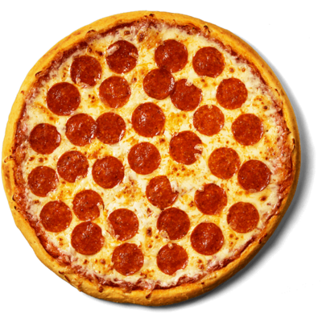

Pizza

Description
This recipe will teach you how to make homeade Pizza!
Ingredients
- 16 ounces pizza dough
- 1/2 cup pizza sauce
- 18 to 20 slices pepperoni
- 12 ounces mozzarella cheese, grated
- 1/2 teaspoon ground black pepper
- 1 teaspoon fresh oregano, optional
- Flour for rolling and shaping dough
Steps
- Preheat oven to 500 degrees Farenheit
- Roll out dough on a lightly floured surface
- Add sauce in a light layer all over the pizza, leaving about 1/4-inch crust around the edges. Chop half of the pepperoni and sprinkle it over the sauce. Top the pizza with grated cheese and the rest of the pepperoni. Season with black pepper.
- Cook for 6 minutes, then rotate the pizza halfway so it cooks evenly. Cook for another 6-8 minutes, or until the crust is golden brown and charred in spots.
- Use pizza peel to slide pizza out onto a cutting board. Let the pizza rest for a minute and slice into pieces.